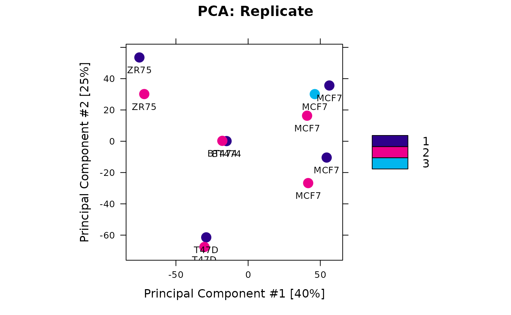
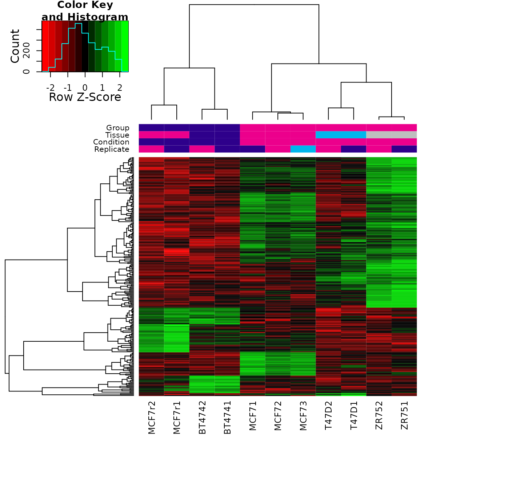
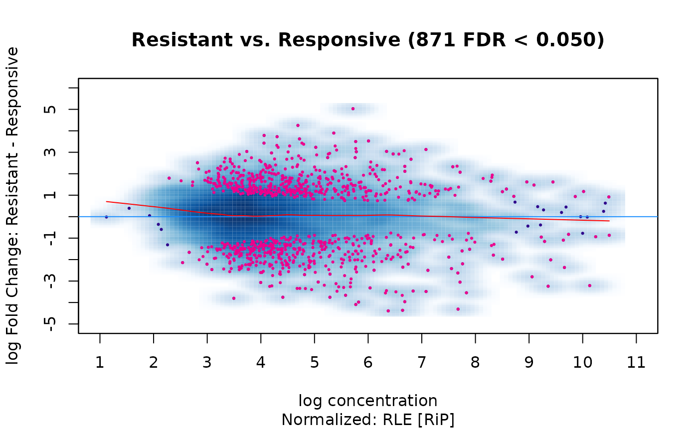
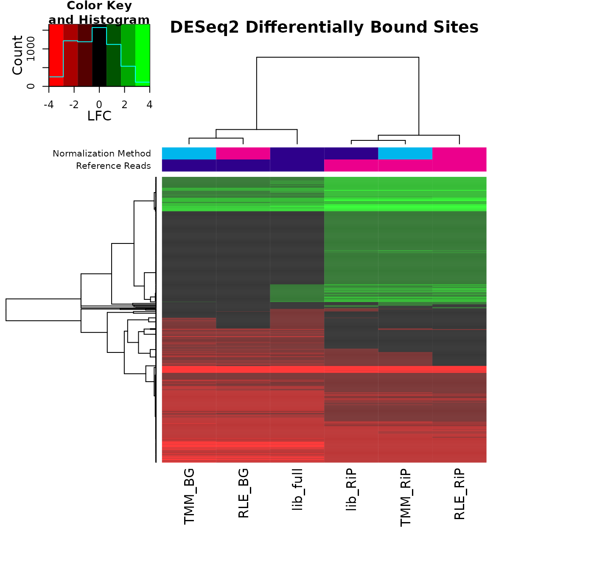

Workshop: Quantitative analysis of ChiP-seq, ATAC-seq, and related DNA enrichment assays
Rory Stark
Cancer Research UK Cambridge Institute, University of Cambridge, Cambridge, UKFebruary 14, 2022
Source:vignettes/Quantitative-ChIPseq-Workshop.Rmd
Quantitative-ChIPseq-Workshop.RmdWorkshop participation
Instructions on how to run and follow along during the workshop.
Workshop participation – local R installation
In order to run the workshop, make sure the following packages are installed from Bioconductor. Here is a list of packages that we will be using:
To run the workshop package, you can download it from here:
NOTE: As this package contains all the workshop data, it is about 500MB and may take some time to download and install.
Install this package into your local R instance.
How to follow the workshop
First load the workshop package:
The set the working directory to where package is installed:
setwd(system.file(package="QuantitativeChIPseqWorkshop"))There are a number of ways to follow the workshop markdown document. You can either view an HTML version of the document that includes all the results, or step through the markdown source and build the results as you go.
Option: Open the pre-built HTML in an RStudio “Help” window
You can open the fully completed workbook (with all code and results) in the “Help” pane in RStudio as follows:
vignette("Quantitative-ChIPseq-Workshop","QuantitativeChIPseqWorkshop")Option: Open the pre-built HTML in a searate Browser window or tab
You can open the fully built workshop (with all code and results) in a browser tab as follows:
rstudioapi::viewer("doc/Quantitative-ChIPseq-Workshop.html")It may be helpful to move the tab into its own window so you can see the vignette and the RStudio window at the same time.
Option: Open the workshop mark-down file in an edit window
You can open the workshop “source” .Rmd file in the RStudio “Source” pane, and follow along, executing each code chunk in sequence, to build it as you go.
file.edit("doc/Quantitative-ChIPseq-Workshop.Rmd")Set directory to where the data are
Now set the directory to where the data is located:
setwd("extdata")You can check that the data are there:
## [1] "dba_norm_comp.RData" "peaks" "reads"
## [4] "tamoxifen.csv"you should see a samplesheet (“tamoxifen.csv”) and directories containing peaks and reads.
Now we’re ready to go!
Loading an experiment into DiffBind
The first step in a quantitative analysis is setting up the experiment so that DiffBind has all the information it needs. For many projects, this can be the most time-consuming step!
What do you need to do a quantitiative analysis of an experiment?
In order to run an quantitative analysis, all the experimental data must be ready. This includes three types of data:
Sample metadata
An experiment is based on a number of samples. Each sample needs a unique SampleID. A comparative analysis requires that the samples are associated with at least two classes that can be compared. The classes the samples belong to are indicated by associated samples metadata, which can include:
- Factor - for ChIPs, this is usually what protein the antibody was targeting, such as a transcription factor or a histone mark.
- Tissue - a designation for the cell type, tissue type, or some other indication of the biological source of the material.
- Condition - an experimental condition, such as WT or Mutant.
- Treatment - an indication of how the cells were treated.
Note that not all of these are required, but there should be at least one metadata factor to divide the samples into classes.
Finally it is imperative that the experimental classes be represented by Replicate samples. It is not possible to perform a meaningful quantitative analysis without replicated data to capture variance. Generally a minimum of three replicates are required to obtain meaningful results.
Aligned sequencing read data
The second type of data needed for an analysis are aligned sequencing reads, generally in the form of ‘.bam’ files. Each sample needs an aligned sequencing library, but may include the following:
- bamReads - the primary aligned reads for the ChIP, ATAC, or other assay.
- bamControl - an optional set of control reads associated with the sample or sample class. For ChIP experiments, this is most often an Input control (ChIP run without an antibody), or a ChIP run with a non-specific antibody. ATAC experiment usually do not have a control.
- SpikeIn - an option set of spike-in reads for normalization.
Called peaks
The type of analysis we are discussing today requires that a peak caller (such as MACS) has been used on the aligned reads to call peaks. While having called peaks for the sample is useful in a variety of ways, it is possible to perform a quantitative analysis without using called peaks. For example, in some cases, the regions of interest may be known in advance (such as a list known gene promoters). An alternative is to perform a quantitative analysis using windows that cover the entire genome. The csaw package (Lun and Smyth 2016) provides a tool to perform such an analysis.
Making a samplesheet
The easiest way to set up an experiment for analysis in DiffBindis to use a sample sheet. This can take the form of a .csv file, or a dataframe.
We can read in the sample sheet provided for the example data set:
samples <- read.csv("tamoxifen.csv")
samples## SampleID Tissue Factor Condition Treatment Replicate
## 1 BT4741 BT474 ER Resistant Full-Media 1
## 2 BT4742 BT474 ER Resistant Full-Media 2
## 3 MCF71 MCF7 ER Responsive Full-Media 1
## 4 MCF72 MCF7 ER Responsive Full-Media 2
## 5 MCF73 MCF7 ER Responsive Full-Media 3
## 6 T47D1 T47D ER Responsive Full-Media 1
## 7 T47D2 T47D ER Responsive Full-Media 2
## 8 MCF7r1 MCF7 ER Resistant Full-Media 1
## 9 MCF7r2 MCF7 ER Resistant Full-Media 2
## 10 ZR751 ZR75 ER Responsive Full-Media 1
## 11 ZR752 ZR75 ER Responsive Full-Media 2
## bamReads ControlID bamControl
## 1 reads/Chr18_BT474_ER_1.bam BT474c reads/Chr18_BT474_input.bam
## 2 reads/Chr18_BT474_ER_2.bam BT474c reads/Chr18_BT474_input.bam
## 3 reads/Chr18_MCF7_ER_1.bam MCF7c reads/Chr18_MCF7_input.bam
## 4 reads/Chr18_MCF7_ER_2.bam MCF7c reads/Chr18_MCF7_input.bam
## 5 reads/Chr18_MCF7_ER_3.bam MCF7c reads/Chr18_MCF7_input.bam
## 6 reads/Chr18_T47D_ER_1.bam T47Dc reads/Chr18_T47D_input.bam
## 7 reads/Chr18_T47D_ER_2.bam T47Dc reads/Chr18_T47D_input.bam
## 8 reads/Chr18_TAMR_ER_1.bam TAMRc reads/Chr18_TAMR_input.bam
## 9 reads/Chr18_TAMR_ER_2.bam TAMRc reads/Chr18_TAMR_input.bam
## 10 reads/Chr18_ZR75_ER_1.bam ZR75c reads/Chr18_ZR75_input.bam
## 11 reads/Chr18_ZR75_ER_2.bam ZR75c reads/Chr18_ZR75_input.bam
## Peaks PeakCaller
## 1 peaks/BT474_ER_1.bed.gz bed
## 2 peaks/BT474_ER_2.bed.gz bed
## 3 peaks/MCF7_ER_1.bed.gz bed
## 4 peaks/MCF7_ER_2.bed.gz bed
## 5 peaks/MCF7_ER_3.bed.gz bed
## 6 peaks/T47D_ER_1.bed.gz bed
## 7 peaks/T47D_ER_2.bed.gz bed
## 8 peaks/TAMR_ER_1.bed.gz bed
## 9 peaks/TAMR_ER_2.bed.gz bed
## 10 peaks/ZR75_ER_1.bed.gz bed
## 11 peaks/ZR75_ER_2.bed.gz bedHere we see the example ChIP-seq data set used for this tutorial. It consists of 11 samples, all ChIPed for the same factor (ER, the estrogen receptor). There are four breast-cancer cell lines involved, representing two experimental conditions: cells that either Responsive to the drug tamoxifen, or those that are Resistant to tamoxifen. Note that one cell line (MCF7) is marked as being both Responsiveand Resistant; these cells are naturally Responsive, but a Resistant version has been derived by treating with tamoxifen until only resistant cells remain. The goal of the experiment is to examine changes in ER binding patterns between the two conditions.
There are seven Responsive replicates, encompassing three different cell lines, with two or three replicates for each Responsivecell line. There are four replicates of Resistant samples in two cell lines, each with two replicates. For each sample we have a set of aligned reads (note that only reads aligned to chromosome 18 are included to speed up the example analysis), and an Input control is available for each cell line/condition combination.
Peaks are included in .bed format (they were originally called using MACS (Zhang et al. 2008).)
Loading the experiment into DiffBind
At this point a complete default end-to-end analysis could be run using a single command (Do not run this code during the workshop!):
result <- dba.analyze(samples)This is tells DiffBind to run through all the steps of an analysis, roughly (Do not run this code during the workshop!):
peaks <- dba(sampleSheet=samples)
peaks <- dba.blacklist(peaks)
counts <- dba.count(peaks)
counts <- dba.normalize(counts)
model <- dba.contrast(counts)
result <- dba.analyze(model)Instead, we are going to walk through each of the steps of the analysis, one at a time.
First load the experiment into DiffBind either by supplying the original .csv file or using the loaded samples dataframe:
tam.peaks <- dba(sampleSheet="tamoxifen.csv")
## BT4741 BT474 ER Resistant Full-Media 1 bed
## BT4742 BT474 ER Resistant Full-Media 2 bed
## MCF71 MCF7 ER Responsive Full-Media 1 bed
## MCF72 MCF7 ER Responsive Full-Media 2 bed
## MCF73 MCF7 ER Responsive Full-Media 3 bed
## T47D1 T47D ER Responsive Full-Media 1 bed
## T47D2 T47D ER Responsive Full-Media 2 bed
## MCF7r1 MCF7 ER Resistant Full-Media 1 bed
## MCF7r2 MCF7 ER Resistant Full-Media 2 bed
## ZR751 ZR75 ER Responsive Full-Media 1 bed
## ZR752 ZR75 ER Responsive Full-Media 2 bedThis creates a DiffBind object (a DBA object) we’ve called tam.peaks, which can be examined:
tam.peaks## 11 Samples, 2845 sites in matrix (3795 total):
## ID Tissue Factor Condition Treatment Replicate Intervals
## 1 BT4741 BT474 ER Resistant Full-Media 1 1080
## 2 BT4742 BT474 ER Resistant Full-Media 2 1122
## 3 MCF71 MCF7 ER Responsive Full-Media 1 1556
## 4 MCF72 MCF7 ER Responsive Full-Media 2 1046
## 5 MCF73 MCF7 ER Responsive Full-Media 3 1339
## 6 T47D1 T47D ER Responsive Full-Media 1 527
## 7 T47D2 T47D ER Responsive Full-Media 2 373
## 8 MCF7r1 MCF7 ER Resistant Full-Media 1 1438
## 9 MCF7r2 MCF7 ER Resistant Full-Media 2 930
## 10 ZR751 ZR75 ER Responsive Full-Media 1 2346
## 11 ZR752 ZR75 ER Responsive Full-Media 2 2345This shows the metadata for the 11 samples, along with how many called peaks were included for each. After loading, overlapping peaks are merged; there are a total of 3,795 unique regions specified, with 2,845 of them overlapping peaks called in at least two samples.
Blacklists and greylists
Now that the peaks are loaded, it is good practice to filter out peaks called in problematic regions. This is accomplished using a standard, published Blacklist of areas in in reference genome known to be problematic. The best known lists have been identified as part of the ENCODE project (Amemiya, Kundaje, and Boyle 2019) and are available for a variety of reference genomes and genome versions. The current ENCODE blacklists are available through the dba.blacklist() function.
In addition, if control alignments are available for an experiment, experiment-specific exclusion lists can be generated reflecting the tissue and experimental conditions used. We call these Greylists, and they are generated using the GreyListChIPpackage (Brown 2015). The idea is to analyze libraries that are not meant to show systematic enrichment (such as Inputs, in which no anti-body is introduced), and identify anomalous regions where a disproportionate degree of signal is present.
Applying a blacklist
If an ENCODE blacklist exists for the reference genome used to align the experimental data, it can be applied automatically using the dba.blacklist() function. The reference genome is automatically detected from the supplied .bam files.
dba.blacklist(tam.peaks, blacklist=TRUE, greylist=FALSE)
## Genome detected: Hsapiens.UCSC.hg19
## Applying blacklist...
## Removed: 3 of 14102 intervals.
## Removed: 1 merged (of 3795) and 1 (of 2845) consensus.
## 11 Samples, 2844 sites in matrix (3794 total):
## ID Tissue Factor Condition Treatment Replicate Intervals
## 1 BT4741 BT474 ER Resistant Full-Media 1 1080
## 2 BT4742 BT474 ER Resistant Full-Media 2 1122
## 3 MCF71 MCF7 ER Responsive Full-Media 1 1555
## 4 MCF72 MCF7 ER Responsive Full-Media 2 1045
## 5 MCF73 MCF7 ER Responsive Full-Media 3 1338
## 6 T47D1 T47D ER Responsive Full-Media 1 527
## 7 T47D2 T47D ER Responsive Full-Media 2 373
## 8 MCF7r1 MCF7 ER Resistant Full-Media 1 1438
## 9 MCF7r2 MCF7 ER Resistant Full-Media 2 930
## 10 ZR751 ZR75 ER Responsive Full-Media 1 2346
## 11 ZR752 ZR75 ER Responsive Full-Media 2 2345This shows that the blacklist filtered out one merged peak that had been called in three of the samples.
Generating and applying a greylist
Greylists can be automatically generated from the controls as DiffBind provides an interface to the GreyListChIP package. This can be a time-consuming operation, as each of the controls is analyzed for anomalous regions.
The blacklist can be applied, and the greylists generated and applied, in a single step NB: This is a compute-intensive step that may take too long to run in the workshop, see alternative method to load pre-computed greylists below
tam.peaks <- dba.blacklist(tam.peaks)
## Genome detected: Hsapiens.UCSC.hg19
## Applying blacklist...
## Removed: 3 of 14102 intervals.
## Counting control reads for greylist...
## Building greylist: reads/Chr18_BT474_input.bam
## coverage: 166912 bp (0.21%)
## Building greylist: reads/Chr18_MCF7_input.bam
## coverage: 106495 bp (0.14%)
## Building greylist: reads/Chr18_T47D_input.bam
## coverage: 56832 bp (0.07%)
## Building greylist: reads/Chr18_TAMR_input.bam
## coverage: 122879 bp (0.16%)
## Building greylist: reads/Chr18_ZR75_input.bam
## coverage: 72704 bp (0.09%)
## BT474c: 58 ranges, 166912 bases
## MCF7c: 14 ranges, 106495 bases
## T47Dc: 11 ranges, 56832 bases
## TAMRc: 10 ranges, 122879 bases
## ZR75c: 15 ranges, 72704 bases
## Master greylist: 72 ranges, 255487 bases
## Removed: 420 of 14099 intervals.
## Removed: 52 merged (of 3795) and 50 (of 2845) consensus.To save time, greylists for the example data set are included, and we can apply them directly:
## [1] "master" "controls"In this object, there is a “master” greylist formed from the individual greylist (computed one per control):
tamoxifen.greylist$master## GRanges object with 72 ranges and 0 metadata columns:
## seqnames ranges strand
## <Rle> <IRanges> <Rle>
## [1] chr18 9217-11264 *
## [2] chr18 105473-112128 *
## [3] chr18 267265-268800 *
## [4] chr18 402433-403456 *
## [5] chr18 504832-505855 *
## ... ... ... ...
## [68] chr18 71815505-71816528 *
## [69] chr18 74060619-74061642 *
## [70] chr18 76774213-76777284 *
## [71] chr18 76849989-76851012 *
## [72] chr18 77377859-77380930 *
## -------
## seqinfo: 1 sequence from hg19 genome
names(tamoxifen.greylist$controls)## [1] "BT474c" "MCF7c" "T47Dc" "TAMRc" "ZR75c"Now we can apply it:
tam.peaks <- dba.blacklist(tam.peaks, greylist=tamoxifen.greylist)
## Genome detected: Hsapiens.UCSC.hg19
## Applying blacklist...
## Removed: 3 of 14102 intervals.
## Master greylist: 72 ranges, 255487 bases
## Removed: 420 of 14099 intervals.
## Removed: 52 merged (of 3795) and 50 (of 2845) consensus.The greylist results in 52 merged peaks being filtered out (50 in the at-least-two-sample consensus), representing some 420 of the originally supplied peaks.
Consensus peaks sets and counting reads
The central vehicle for conducting a quantitative analysis is a binding matrix, with rows representing genomic intervals, columns representing samples, and values representing overlapping read counts (similar to an expression matrix in RNA-seq). To compute this, we need to define the rows in the form of a consensus peak set.
Consensus peak set
One straightforward way to determine the consensus peaks is to consider genomic intervals that are identified as peaks in one or more of the samples. It can be helpful to make a plot of how many peaks overlap in how many samples:
olap.rate <- dba.overlap(tam.peaks, mode=DBA_OLAP_RATE)
olap.rate## [1] 3743 2795 1731 1350 1037 782 621 455 362 186 119
plot(olap.rate, xlab="Overlapping samples", ylab="Overlapping peaks", type="b")
This shows that there are 3743 total merged peaks, representing the union of all intervals. At the other extreme, there are 119 peaks that overlap in all 11 samples, representing the intersection of all the samples.
Which should we chose? Given the rigor of the underlying statistical analysis, we can choose a more inclusive consensus set. The default is to make the consensus peak set using peaks identified in at least two samples (2795).
More complex schemes, such as forming a consensus peak set separately from the replicates for each condition and then taking the union of these, are also possible.
The default consensus peak set, which includes merged peaks that overlap in at least two samples, can be retrieved:
consensus.peaks <- dba.peakset(tam.peaks, bRetrieve=TRUE)
consensus.peaks[,0]## GRanges object with 2795 ranges and 0 metadata columns:
## seqnames ranges strand
## <Rle> <IRanges> <Rle>
## 1 chr18 90637-91191 *
## 2 chr18 150145-150725 *
## 3 chr18 150764-151269 *
## 4 chr18 188982-189652 *
## 5 chr18 199684-200400 *
## ... ... ... ...
## 2791 chr18 77782496-77783186 *
## 2792 chr18 77902962-77903771 *
## 2793 chr18 77955224-77955928 *
## 2794 chr18 77968033-77968822 *
## 2795 chr18 77987044-77988289 *
## -------
## seqinfo: 1 sequence from an unspecified genome; no seqlengthsCounting overlapping reads
The next step is to form the binding matrix using the consensus peak and computing overlapping read counts for each peak in each sample, whether or not it was called as a peak in that sample.
The function used to accomplish this is dba.count(): NB: This is a compute-intensive step that may take too long to run in the workshop, see below for alternative way to load pre-computed counts.
tam.counts <- dba.count(tam.peaks)
## Computing summits...
## Re-centering peaks...
## Reads will be counted as Single-end.You can, alternatively, obtain the results as follows:
data(tamoxifen_counts)
tam.counts <- tamoxifendba.count() takes a number of parameter to control it’s default behavior. Here is a list of some important ones:
-
peaks accepts a consensus peak set. We could have used the peak set retrieved above by specifying
peaks=consensus.peaks. -
summits activates a two-stage counting process. In the first stage, a “summit” is computed for each peak based on the read pileups at each base for each sample the peak was called in. The peak intervals are then re-specified to be a constant interval upstream and downstream of this summit. The default of
summits=200, intended for ChIP-seq, results in 401bp peaks (The summit point plus 200bp in each direction). In the second phase the alignments are revisited, counting reads overlapping these intervals. -
filter will eliminate consensus peaks with lower than a set threshold of counts. The default
filter=1will filter consensus peaks where there is not at least one sample whose RPKM (reads per kilobase per million reads) is greater than 1. -
bRemoveDuplicates controls how duplicate alignments (multiple reads mapping to the exact same genomic position) are handled. The default
bRemoveDuplicates=FALSEwill keep and count duplicates, as DNA enrichment assays often include biologically meaningful duplicate reads (especially when using short read or single-end sequencing). -
mapQCth sets a threshold for ignoring low-quality alignment. The default value of
mapQCth=15results in all multi-mapped reads (reads that can map to multiple locations in the genome) being ignored.
After counting the reads, the DBA object reflects the consensus peak set rather than the original peak data:
tam.counts## 11 Samples, 2845 sites in matrix:
## ID Tissue Factor Condition Treatment Replicate Reads FRiP
## 1 BT4741 BT474 ER Resistant Full-Media 1 652697 0.16
## 2 BT4742 BT474 ER Resistant Full-Media 2 663370 0.15
## 3 MCF71 MCF7 ER Responsive Full-Media 1 346429 0.31
## 4 MCF72 MCF7 ER Responsive Full-Media 2 368052 0.19
## 5 MCF73 MCF7 ER Responsive Full-Media 3 466273 0.25
## 6 T47D1 T47D ER Responsive Full-Media 1 399879 0.11
## 7 T47D2 T47D ER Responsive Full-Media 2 1475415 0.06
## 8 MCF7r1 MCF7 ER Resistant Full-Media 1 616630 0.22
## 9 MCF7r2 MCF7 ER Resistant Full-Media 2 593224 0.14
## 10 ZR751 ZR75 ER Responsive Full-Media 1 706836 0.33
## 11 ZR752 ZR75 ER Responsive Full-Media 2 2575408 0.22Now all eleven samples have counts for all 2,845 consensus sites. Two columns have been added to the display, showing the total number of aligned Reads in each .bamfile, and the Fraction of Reads in Peaks (FRiP) representing the proportion of reads that were counted as overlapping a consensus site.
Examining and normalizing the binding matrix
At this stage it is worth looking more closely at certain aspects of the binding matrix in preparation for normalization and modeling.
Plots to look for a batch effect
Of particular interest is the presence of technical effects in the experiment, such as batch effects.
We can look at how the samples cluster using heatmaps and PCA plots. A correlation heatmap (in which correlations values between each pair of columns in the binding matrix is calculated) can be shown using dba.plotHeatmap(), which is also the default plot:
plot(tam.counts)This shows a very high correlation between the replicate for each sample type, which indicates that there is not a large batch effect. The main clustering divides the samples into those derived from the MCF7 cell line, which are all highly correlated, with the other cell lines clustering together. At this point, we do not see a natural clustering into tamoxifen Responsive and Resistant clusters.
We can verify that there is no obvious batch effect with a PCA plot:
dba.plotPCA(tam.counts,DBA_REPLICATE, label=DBA_TISSUE)
Normalization (default)
The next step is to normalize the data. Normalization of ChIP and ATAC sequencing data is not always straightforward, especially compared to normalization of RNA-seq data. We will look more closely at these issues in a subsequent section. For now we will use the default normalization in DiffBind, which makes minimal assumptions about the data and seeks to “do no harm.”
First let’s make an MA plot of the data before normalization. An MA plot shows how the fold changes between conditions are distributed as the mean concentration of reads counts increases. For this plot, we’ll use the samples in the Responsive condition as the baseline, and see how the samples in the Resistant condition compare.
dba.plotMA(tam.counts, bNormalized=FALSE, sub="Non-Normalized",
contrast=list(Resistant=tam.counts$masks$Resistant,
Responsive=tam.counts$masks$Responsive)) In this plot, each of the consensus site is a point (smoothed), while the the X-axis orders them according to the mean number of
In this plot, each of the consensus site is a point (smoothed), while the the X-axis orders them according to the mean number of
overlapping read counts for the consensus site, and the Y-axis shows the log2 fold change. Points above the 0-fold line (blue) demonstrate greater enrichment of reads in the Resistant condition, while point below the 0-fold line are more enriched in the Responsive condition. The red curve is a loess fit showing the overall trend in the data.
This plots shows that in the raw data, the Responsive condition samples have overall higher concentration of overlapping reads in consensus peaks. This could either be a technical bias, or an indication that there is a loss of ER binding in the tamoxifen resistant condition.
By default, DiffBind normalizes only using the full library sizes of the samples (total aligned reads in the .bam). Perform a default normalization and see how the plot changes:
tam.counts <- dba.normalize(tam.counts)
dba.plotMA(tam.counts, sub="Normalized (Default)",
contrast=list(Resistant=tam.counts$masks$Resistant,
Responsive=tam.counts$masks$Responsive))Compared to the non-normalized data, the fold changes are somewhat more balanced and moved closer to the central 0-fold line, although the loess fit shows there is still a bias towards greater enrichment in the Responsive condition.
We will consider normalization in more depth after modeling the data, as it is useful to consider the impact of normalization on the modeling results.
Modeling and testing
The core differential analysis in DiffBind is performed by one or more underlying read count modeling Bioconductor packages. The default package is DESeq2 (Love, Huber, and Anders 2014); the edgeR package (Robinson, McCarthy, and Smyth 2010) may be also used either as an alternative or in parallel. These packages, developed for modeling RNA-seq read counts, enable GLMs to be fit.
Default model
The DiffBind function dba.contrast() is used to specify the model and establish contrasts to be tested against the model. A default model and contrasts(s) can easily be established (note we explicitly specify that the baseline Condition should be Responsive):
tam.model <- dba.contrast(tam.counts,
reorderMeta=list(Condition="Responsive"))## Computing results names...
tam.model## 11 Samples, 2845 sites in matrix:
## ID Tissue Factor Condition Treatment Replicate Reads FRiP
## 1 BT4741 BT474 ER Resistant Full-Media 1 652697 0.16
## 2 BT4742 BT474 ER Resistant Full-Media 2 663370 0.15
## 3 MCF71 MCF7 ER Responsive Full-Media 1 346429 0.31
## 4 MCF72 MCF7 ER Responsive Full-Media 2 368052 0.19
## 5 MCF73 MCF7 ER Responsive Full-Media 3 466273 0.25
## 6 T47D1 T47D ER Responsive Full-Media 1 399879 0.11
## 7 T47D2 T47D ER Responsive Full-Media 2 1475415 0.06
## 8 MCF7r1 MCF7 ER Resistant Full-Media 1 616630 0.22
## 9 MCF7r2 MCF7 ER Resistant Full-Media 2 593224 0.14
## 10 ZR751 ZR75 ER Responsive Full-Media 1 706836 0.33
## 11 ZR752 ZR75 ER Responsive Full-Media 2 2575408 0.22
##
## Design: [~Condition] | 1 Contrast:
## Factor Group Samples Group2 Samples2
## 1 Condition Resistant 4 Responsive 7The default model is based on observing that there is only one metadata field, Condition, that has a) multiple values and b) at least three samples having each value. A design formula is established using this factor and a contrast comparing Resistant samples against the Responsive samples, with four samples in the Resistant condition and seven samples in the Responsive condition.
Fitting and testing
With the design formula in place, and a contrast established, the model can be fit with DESeq2 and tests applied for the contrast:
tam.model <- dba.analyze(tam.model)
## Analyzing...
## gene-wise dispersion estimates
## mean-dispersion relationship
## final dispersion estimates
dba.show(tam.model,bContrasts=TRUE)
## Factor Group Samples Group2 Samples2 DB.DESeq2
## 1 Condition Resistant 4 Responsive 7 246At the default threshold of FDR < 0.05, some 246 sites are identified as being differentially bound.
Examining analysis results
After conducting an analysis, the results can be examined in a number of ways, including obtaining a report with the differential sites, as well as some useful plots.
Reporting: obtaining differential sites
The differential sites may be retrieved as a GRanges object:
tam.db <- dba.report(tam.model)
tam.db## GRanges object with 246 ranges and 6 metadata columns:
## seqnames ranges strand | Conc Conc_Resistant
## <Rle> <IRanges> <Rle> | <numeric> <numeric>
## 976 chr18 26861047-26861447 * | 8.37281 4.44855
## 2470 chr18 65030123-65030523 * | 6.02482 2.65613
## 1484 chr18 41369550-41369950 * | 8.25529 5.12414
## 2452 chr18 64490736-64491136 * | 7.42827 3.23712
## 2338 chr18 60892950-60893350 * | 8.09133 3.44567
## ... ... ... ... . ... ...
## 2524 chr18 67565747-67566147 * | 3.80325 2.43917
## 1221 chr18 33021825-33022225 * | 5.04267 2.81227
## 433 chr18 11320959-11321359 * | 4.29417 5.15749
## 235 chr18 7757228-7757628 * | 5.04773 6.13374
## 1405 chr18 38482793-38483193 * | 4.23057 2.02778
## Conc_Responsive Fold p-value FDR
## <numeric> <numeric> <numeric> <numeric>
## 976 8.98991 -3.09374 1.81584e-08 3.36377e-05
## 2470 6.62520 -2.86498 2.84202e-08 3.36377e-05
## 1484 8.84621 -2.74884 3.82692e-08 3.36377e-05
## 2452 8.05134 -3.08707 4.82434e-08 3.36377e-05
## 2338 8.72229 -3.12556 7.73225e-08 4.31305e-05
## ... ... ... ... ...
## 2524 4.23561 -1.30051 0.00423292 0.0486294
## 1221 5.57838 -1.46474 0.00423698 0.0486294
## 433 3.38332 1.31165 0.00429149 0.0490532
## 235 3.56723 1.45105 0.00436302 0.0496672
## 1405 4.76394 -1.45924 0.00440771 0.0499719
## -------
## seqinfo: 1 sequence from an unspecified genome; no seqlengthsFor each site, the genomic interval is reported, as well as the key statistics:
- Conc: Mean concentration of (normalized) reads across all samples, reported as a log2 value.
-
Conc_Resistant: Mean concentration of (normalized) reads across the
Resistantsamples, reported as a log2 value. -
Conc_Responsive: Mean concentration of (normalized) reads across the
Responsivesamples, reported as a log2 value. -
Fold: Log2 Fold Change, as computed by
DESeq2. -
p-value: p-value for the comparison, as computed by
DESeq2. -
FDR: multiple-testing corrected significance value for the comparison, as computed by
DESeq2.
We can look at the balance between Gain and Loss sites:
sum(tam.db$Fold>0)## [1] 64
sum(tam.db$Fold<0)## [1] 182The report object can now be used for downstream analysis, such as motif analysis, annotation to genomic features, etc.
Plotting: MA plot
After an analysis, it is useful to generate an MA plot with the differential sites superimposed:
dba.plotMA(tam.model)Plotting: Volcano plot
Similar to an MA plot, a volcano plot shows the log fold change (on the X-axis instead of the Y-axis), compared to the inverse of the FDR on the Y-axis, to show how FDR and LFC are related:
dba.plotVolcano(tam.model)Plotting: Clustering correlation heatmap
We can also re-visit the clustering plots we originally did on the full binding matrix, except this time only taking differential sites into consideration:
plot(tam.model, contrast=1)As we would hope, the differential sites separate the samples into two clusters, one Resistant and one Responsive.
Plotting: PCA plot
Likewise, a PCA plot based only on the differential sites shows how the samples can be separated by condition:
dba.plotPCA(tam.model, contrast=1, label=DBA_TISSUE)
Plotting: Read concentration heatmap
In addition to the correlation heatmap, a plot showing the read concentrations can also be generated. In this case we scale the read concentrations for each site, to emphasize the difference between the lowest and highest values:
hmap <- colorRampPalette(c("red", "black", "green"))(n = 13)
readscores <- dba.plotHeatmap(tam.model, contrast=1, correlations=FALSE,
scale="row", colScheme = hmap)
Multi-factor design
The default design and contrasts may not be the correct ones, as they may not be focused on the factors of interest. In the current case, it turns out that it is important to use a multi-factor design in order to model the use of different cell lines with each condition, and most importantly the fact that a single cell origin (MCF7) is used across conditions.
In the current case, we will change the model to the “correct” multi-factor design before proceeding:
tam.model <- dba.contrast(tam.model, design="~Tissue + Condition")
## Replacing design and removing analysis.
## Computing results names...
dba.show(tam.model,bDesign=TRUE)
## [1] "~Tissue + Condition"
tam.model <- dba.analyze(tam.model)
## Analyzing...
## gene-wise dispersion estimates
## mean-dispersion relationship
## final dispersion estimates
tam.model
## 11 Samples, 2845 sites in matrix:
## ID Tissue Factor Condition Treatment Replicate Reads FRiP
## 1 BT4741 BT474 ER Resistant Full-Media 1 652697 0.16
## 2 BT4742 BT474 ER Resistant Full-Media 2 663370 0.15
## 3 MCF71 MCF7 ER Responsive Full-Media 1 346429 0.31
## 4 MCF72 MCF7 ER Responsive Full-Media 2 368052 0.19
## 5 MCF73 MCF7 ER Responsive Full-Media 3 466273 0.25
## 6 T47D1 T47D ER Responsive Full-Media 1 399879 0.11
## 7 T47D2 T47D ER Responsive Full-Media 2 1475415 0.06
## 8 MCF7r1 MCF7 ER Resistant Full-Media 1 616630 0.22
## 9 MCF7r2 MCF7 ER Resistant Full-Media 2 593224 0.14
## 10 ZR751 ZR75 ER Responsive Full-Media 1 706836 0.33
## 11 ZR752 ZR75 ER Responsive Full-Media 2 2575408 0.22
##
## Design: [~Tissue + Condition] | 1 Contrast:
## Factor Group Samples Group2 Samples2 DB.DESeq2
## 1 Condition Resistant 4 Responsive 7 783With the multi-factor model taking into account the underlying tissue types, we now identify 783 differential sites at the default threshold of FDR < 0.05. The resulting MA plot shows these are biased towards loss of binding in the Resistant condition:
dba.plotMA(tam.model, contrast=1)Normalization discussion
Normalization of experimental data is particularly important in ChIP-seq (and ATAC-seq) analysis, and may require more careful consideration than needed for RNA-seq analysis. This is because the range of ChIP-seq experiments covers more cases than RNA-seq, which usually involve a similar set of possible expressed genes and/or transcripts, many of which are not expected to significantly change expression. ChIP, ATAC, and similar enrichment-based sequencing data may not follow the assumptions inherent in popular methods for normalizing RNA-seq data, as well as exhibiting different types of efficiency and other biases.
Core normalization methods
The default normalization method in DiffBind is to look only at the relative library sizes (number of aligned reads) of the experimental samples. Why don’t we use the underlying normalization methods inherent in the DESeq2 (RLE, or Relative Log Expression) and edgeR (TMM, Trimmed Mean of M-values) differential analysis packages?
Consider the example experiment. We saw in the first two MA plots that there was a bias towards greater read concentration in the Responsive condition; this was reduced somewhat, but still remained, after library-size normalization, and the analysis identified more differential sites that gained binding in the Responsive condition (alternatively interpretable as binding loss in the Responsive condition:)
dba.plotMA(tam.model,bNormalized=FALSE, th=0, sub="Non-Normalized")
dba.plotMA(tam.model,bNormalized=TRUE, sub="Normalized: Library Size")Let’s see what happens if we normalize against the binding matrix (RiP) using the “native” method in DESeq2, RLE:
tam.model <- dba.normalize(tam.model, normalize="RLE")
tam.model <- dba.analyze(tam.model)
## Analyzing...
## gene-wise dispersion estimates
## mean-dispersion relationship
## final dispersion estimates
dba.plotMA(tam.model,bNormalized=TRUE, sub="Normalized: RLE [RiP]")
The result is quite different! The read concentrations are closely balanced and fit near the zero log fold change line. The differential sites are also more balanced between those losing and gaining affinity in the Resistant condition:
rep <- dba.report(tam.model)
sum(rep$Fold < 0)## [1] 402
sum(rep$Fold > 0)## [1] 469What accounts for the difference? Which is the “correct” analysis?
Reference reads
It turns out that for the type of data we are dealing with in DNA enrichment assays, the reads that are used as the reference for normalizing are more important than the normalization method itself. While in RNA-seq experiments the expression matrix can be normalized directly, based on the reads that uniquely overlap genes or transcripts, this does not apply to a binding matrix based on a consensus peakset.
In a windowing based analysis such as is done using the csaw package(Lun and Smyth 2016), where there is no consensus binding matrix, this issue was addressed by using large (>10,000bp) “bins” of reads across the genome. The idea is that the bins, being so much larger in size than binding sites or stretches of open chromatin, contain mostly “background” reads, and present a less biased way of providing a read count matrix on which to base normalization calculations. This “background” method is included in DiffBind NB: This is a compute-intensive step, however if you have loaded the pre-computed counts, these already include the background reads so this operation may be safely run:
tam.model <- dba.normalize(tam.model, normalize="RLE",
background=TRUE)
tam.model <- dba.analyze(tam.model)
## Analyzing...
## gene-wise dispersion estimates
## mean-dispersion relationship
## final dispersion estimates
dba.plotMA(tam.model,bNormalized=TRUE, sub="Normalized: RLE [Background]")This yields result that more closely match those obtained using the default library-size based normalization.
Comparison of normalization and reference reads methods
It is interesting to compare the impact of six different normalization schemes:
- Library size normalization based on total aligned reads (
lib_full) - Library size normalization based on Reads in Peaks (
lib_RiP) - RLE (native to
DESeq2) normalization based on Reads in Peaks (RLE_RiP) - RLE (native to
DESeq2) normalization based on background bins (RLE_BG) - TMM (native to
edgeR) normalization based on Reads in Peaks (TMM_RiP) - TMM (native to
edgeR) normalization based on background bins (TMM_BG)
There is an R script in the inst/scripts directory called compare_norm.R, that performs all six of the normalization schemes, performs a DESeq2 analysis on each, and collects the differential sites into a report-based DBA object that can be loaded as follows:
norm.comp <- dba.load("norm_comp")
norm.comp
## 6 Samples, 1061 sites in matrix:
## Contrast Normalization.Method Reference.Reads Analysis.Method Intervals
## 1 lib_full lib BG DESeq2 781
## 2 lib_RiP lib RiP DESeq2 918
## 3 RLE_RiP RLE RiP DESeq2 852
## 4 RLE_BG RLE BG DESeq2 651
## 5 TMM_RiP TMM RiP DESeq2 905
## 6 TMM_BG TMM BG DESeq2 689We can look at the differences in a couple of ways. One is to consider how closely correlated are the resulting differential sites:
cor <- dba.plotHeatmap(norm.comp)This shows how the results cluster. While all the analysis have a core set of sites in common (the lowest correlation between analyses is 0.82, there are two distinct clusters driven not by the normalization methods, but by the choice of reference reads. One cluster uses all the reads (background bins BG or full library size full), while the other cluster normalizes based only on reads in the binding matrix (RiP). The least important difference is the choice of normalization methods: edgeR’s TMM method and DESeq2’s RLE method produce essentially the same results when using the same reference reads.
Next we can look at differences in the differential sites themselves by plotting a heatmap of the log fold changes (LFC) of each site:
hmap <- colorRampPalette(c("red", "black", "green"))(n = 7)
dba.plotHeatmap(norm.comp, correlations=FALSE,
bLog=FALSE, colScheme=hmap,
minval=-4, maxval=4,
key.title = "LFC", main = "DESeq2 Differentially Bound Sites")
Sites in green are ones that gain binding intensity in the Resistant condition, while those in red lose binding intensity. Sites in black are ones that are not identified in a specific analysis. This plot again shows how the analyses cluster first by the choice of reference reads, but also shows how the balance of sites changes, with one cluster identifying mostly Loss (red) sites, and the other RiP cluster identifying many more Gain sites.
The biological conclusions one might reach could be quite different depending on which normalization scheme is chosen.
Spike-ins and parallel factors
While it is beyond the scope of this workshop, it is worth noting that alternative sets of reference reads can be used. DiffBind supports the use of spike-ins, where the reads used to normalize the libraries are based on those aligned to exogenous chromatin (eg. from Drosophila melanogaster), or are identified as peaks associated with a factor or mark that is known to not change under the experimental conditions. See the DiffBind vignette, and help page for dba.normalize(), for guidance on how to perform such normalization.
sessionInfo()
sessionInfo()
## R version 4.1.2 (2021-11-01)
## Platform: x86_64-pc-linux-gnu (64-bit)
## Running under: Ubuntu 20.04.3 LTS
##
## Matrix products: default
## BLAS/LAPACK: /usr/lib/x86_64-linux-gnu/openblas-pthread/libopenblasp-r0.3.8.so
##
## locale:
## [1] LC_CTYPE=en_US.UTF-8 LC_NUMERIC=C
## [3] LC_TIME=en_US.UTF-8 LC_COLLATE=en_US.UTF-8
## [5] LC_MONETARY=en_US.UTF-8 LC_MESSAGES=en_US.UTF-8
## [7] LC_PAPER=en_US.UTF-8 LC_NAME=C
## [9] LC_ADDRESS=C LC_TELEPHONE=C
## [11] LC_MEASUREMENT=en_US.UTF-8 LC_IDENTIFICATION=C
##
## attached base packages:
## [1] stats4 stats graphics grDevices utils datasets methods
## [8] base
##
## other attached packages:
## [1] csaw_1.28.0 GreyListChIP_1.26.0
## [3] DiffBind_3.4.9 SummarizedExperiment_1.24.0
## [5] Biobase_2.54.0 MatrixGenerics_1.6.0
## [7] matrixStats_0.61.0 GenomicRanges_1.46.1
## [9] GenomeInfoDb_1.30.1 IRanges_2.28.0
## [11] S4Vectors_0.32.3 BiocGenerics_0.40.0
## [13] knitr_1.37
##
## loaded via a namespace (and not attached):
## [1] amap_0.8-18 colorspace_2.0-2 rjson_0.2.21
## [4] hwriter_1.3.2 ellipsis_0.3.2 rprojroot_2.0.2
## [7] XVector_0.34.0 fs_1.5.2 farver_2.1.0
## [10] bit64_4.0.5 ggrepel_0.9.1 AnnotationDbi_1.56.2
## [13] fansi_1.0.2 mvtnorm_1.1-3 apeglm_1.16.0
## [16] splines_4.1.2 codetools_0.2-18 cachem_1.0.6
## [19] geneplotter_1.72.0 jsonlite_1.7.3 Rsamtools_2.10.0
## [22] annotate_1.72.0 ashr_2.2-47 png_0.1-7
## [25] httr_1.4.2 compiler_4.1.2 Matrix_1.4-0
## [28] fastmap_1.1.0 limma_3.50.0 cli_3.2.0
## [31] htmltools_0.5.2 tools_4.1.2 coda_0.19-4
## [34] gtable_0.3.0 glue_1.6.1 GenomeInfoDbData_1.2.7
## [37] systemPipeR_2.0.5 dplyr_1.0.8 ShortRead_1.52.0
## [40] Rcpp_1.0.8 bbmle_1.0.24 jquerylib_0.1.4
## [43] pkgdown_2.0.2 vctrs_0.3.8 Biostrings_2.62.0
## [46] rtracklayer_1.54.0 xfun_0.29 stringr_1.4.0
## [49] lifecycle_1.0.1 irlba_2.3.5 restfulr_0.0.13
## [52] gtools_3.9.2 XML_3.99-0.8 edgeR_3.36.0
## [55] zlibbioc_1.40.0 MASS_7.3-55 scales_1.1.1
## [58] BSgenome_1.62.0 ragg_1.2.1 parallel_4.1.2
## [61] RColorBrewer_1.1-2 yaml_2.2.2 memoise_2.0.1
## [64] ggplot2_3.3.5 emdbook_1.3.12 sass_0.4.0
## [67] bdsmatrix_1.3-4 RSQLite_2.2.9 latticeExtra_0.6-29
## [70] stringi_1.7.6 SQUAREM_2021.1 genefilter_1.76.0
## [73] highr_0.9 BiocIO_1.4.0 desc_1.4.0
## [76] caTools_1.18.2 BiocParallel_1.28.3 truncnorm_1.0-8
## [79] rlang_1.0.1 pkgconfig_2.0.3 systemfonts_1.0.4
## [82] bitops_1.0-7 evaluate_0.14 lattice_0.20-45
## [85] invgamma_1.1 purrr_0.3.4 labeling_0.4.2
## [88] GenomicAlignments_1.30.0 htmlwidgets_1.5.4 bit_4.0.4
## [91] tidyselect_1.1.1 DESeq2_1.34.0 plyr_1.8.6
## [94] magrittr_2.0.2 R6_2.5.1 gplots_3.1.1
## [97] generics_0.1.2 metapod_1.2.0 DBI_1.1.2
## [100] DelayedArray_0.20.0 pillar_1.7.0 survival_3.2-13
## [103] KEGGREST_1.34.0 RCurl_1.98-1.6 mixsqp_0.3-43
## [106] tibble_3.1.6 crayon_1.5.0 KernSmooth_2.23-20
## [109] utf8_1.2.2 rmarkdown_2.11 jpeg_0.1-9
## [112] locfit_1.5-9.4 grid_4.1.2 blob_1.2.2
## [115] digest_0.6.29 xtable_1.8-4 numDeriv_2016.8-1.1
## [118] textshaping_0.3.6 munsell_0.5.0 bslib_0.3.1#References